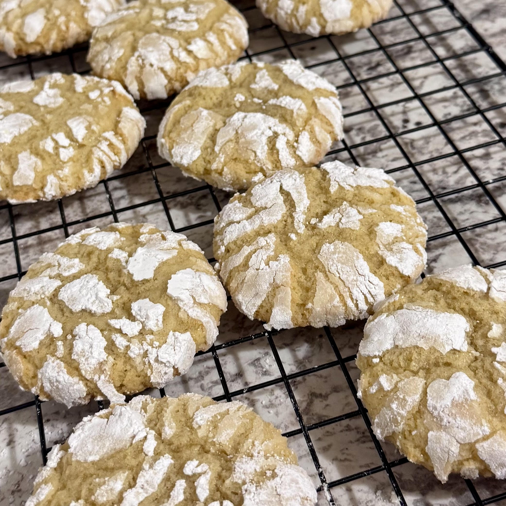

This recipe is one that I altered but was originally found on allrecipes.com, you can find the original unaltered recipe here. The original recipe used butter instead of a neutral tasting oil, which in a crinkle cookie can cause the powdered sugar on the surface of the cookie to absorb the extra moisture from the butter and result in a less prominent "crinkle". I also altered a few other ingredients and ratios to optimize for chewiness and structure, while the original recipe resulted in a more fluffy and crispy lemon cookie.
These cookies are asbolutely delicious and are the perfect dessert or treat for the spring and summer months. These lemon cookies also happen to be dairy-free so if you have any allergen sensitivities to milk or lactose you'll still be able to enjoy these tasty and delicious, chewy and soft lemon cookies. You will only need 2 lemons for this recipe; other ingredients you'll need for this recipe not typically found in a household pantry include lemon extract. Refrigerating the dough before baking these cookies is crucial for getting the perfect texture and spread when baking. This recipe takes about 4-5 hours from start to finish and makes anywhere from a dozen to 18 cookies depending on how big you want the resulting cookie to be.
Congrats! Your lemon cookies are ready to be eaten.
Home